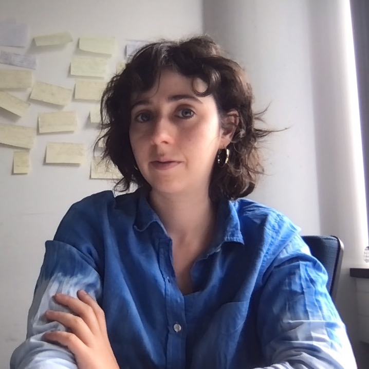

I am currently a researcher at the CEA List near Paris.
These days, I am working on runtime verification of distributed systems. I am interested in verification, language theory, distributed computation and Petri nets, and more generally in mathematical reasoning in a computer science setting. You can find a list of my publications on dblp, Google Scholar.
I was a PostDoc in Pierre Ganty's group at the IMDEA Software Institute in 2023 and 2024. I completed my Ph.D. in 2023 under the supervision of Javier Esparza at the Technical University of Munich (TUM), in the Chair for Foundations of Software Reliability and Theoretical Computer Science. I worked on parameterized verification of distributed systems, Petri net reachability and population protocols in the context of the ERC-supported project PaVeS.
I obtained my Master’s degree in Computer Science from the École Normale Supérieure Paris-Saclay (formerly ENS Cachan) in 2018. I earned a Bachelor’s degree in Fundamental and Applied Mathematics from the Université Paris-Sud (formerly Université d’Orsay). More information on my academic background can be found in my curriculum vitae (last updated 2024).
P. Ganty, C. Sánchez, N. Waldburger, C. Weil-Kennedy. Temporal Hyperproperties for Population Protocols. Accepted at FoSSaCS 2025. (arXiv)
P. Eichler, S. Jacobs, C. Weil-Kennedy. Parameterized Verification of Systems with Precise (0,1)-Counter Abstraction. Accepted at VMCAI 2025. (arXiv)
S. van Bergerem, R. Guttenberg, S. Kiefer, C. Mascle, N. Waldburger, C. Weil-Kennedy. Verification of Population Protocols with Unordered Data. ICALP 2024. (arXiv)
K. Doveri, P. Ganty, C. Weil-Kennedy. A Uniform Framework for Language Inclusion Problems. In Taming the Infinities of Concurrency: Essays Dedicated to Javier Esparza on the Occasion of His 60th Birthday, LNCS volume 14660, 2024.
C. Weil-Kennedy. Observation Petri Nets. Doctoral thesis, published in May 2023.
A. R. Balasubramanian, L. Guillou, C. Weil-Kennedy. Parameterized Analysis of Reconfigurable Broadcast Networks. FoSSaCS 2022. (arXiv) Erratum
A. R. Balasubramanian, C. Weil-Kennedy. Reconfigurable Broadcast Networks and Asynchronous Shared-Memory Systems are Equivalent. GandALF 2021. (arXiv)
M. Raskin, C. Weil-Kennedy. Efficient Restrictions of Immediate Observation Petri Nets. Reachability Problems 2020. (arXiv)
M. Raskin, C. Weil-Kennedy, J. Esparza. Flatness and Complexity of Immediate Observation Petri Nets. CONCUR 2020. (arXiv)
J. Esparza, S. Jaax, M. Raskin, C. Weil-Kennedy. The Complexity of Verifying Population Protocols. Distributed Computing Journal. (arXiv)
J. Esparza, M. Raskin, C. Weil-Kennedy. Parameterized Analysis of Immediate Observation Petri Nets. Petri Nets 2019. (arXiv) Received the Best Paper Award.
J. Esparza, P. Ganty, R. Majumdar, C. Weil-Kennedy. Verification of Immediate Observation Population Protocols. CONCUR 2018. (arXiv)
I was a tutor for the following lectures at TUM.
Automata and Formal Languages (Winter Semester 2019/2020, Winter Semester 2020/2021, Winter Semester 2021/2022)
Petri Nets (Summer Semester 2019, Summer Semester 2020, Summer Semester 2021, Summer Semester 2022)
Fundamental Algorithms (Winter Semester 2018/2019)
I co-supervised three Bachelor theses on extending the teaching tool Automata Tutor to Petri nets by Arpad Botos, Felix Rinderer and Lilo Walter at the TUM. I also co-supervised a Master thesis on parameterized analysis of broadcast networks by Lucie Guillou of ENS Rennes.